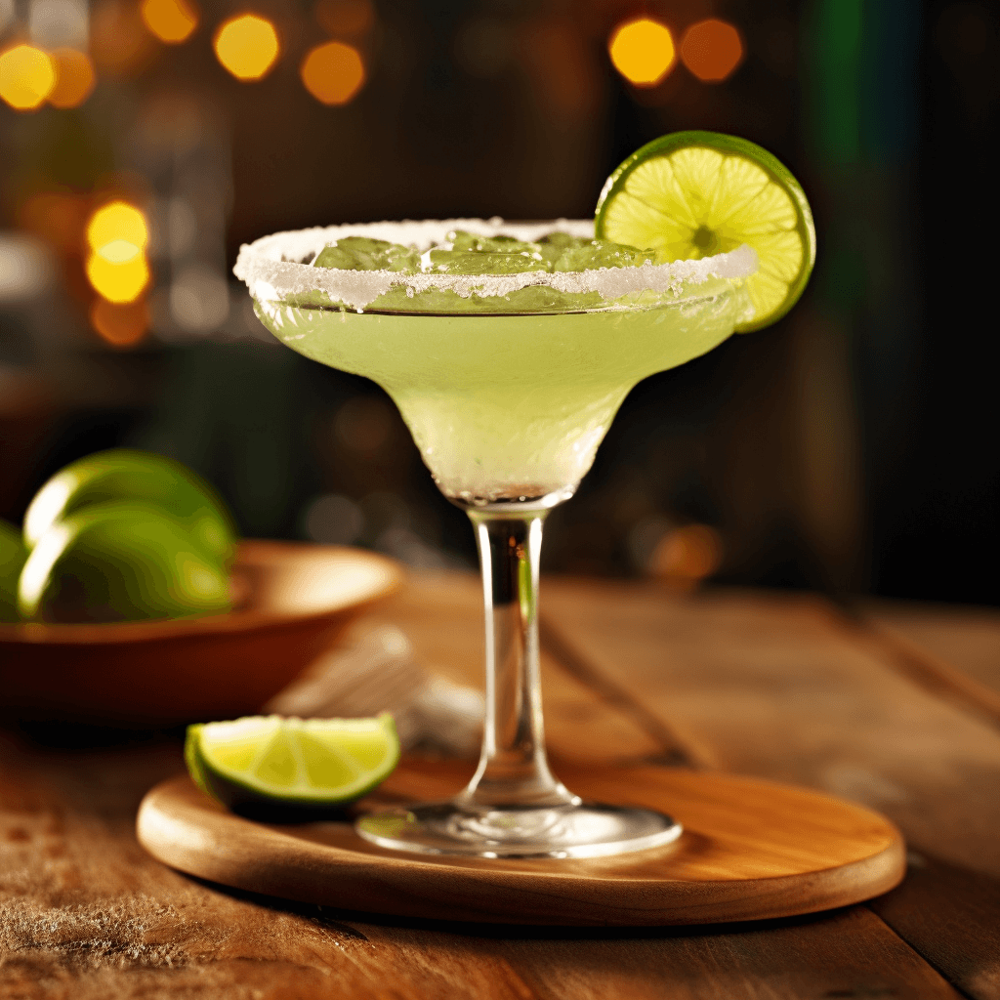

Vamos aos ingredientes : 50 ml de Tequila, 30 ml de Triple Sec ( Licor de Laranja), 30 ml Suco de Limão Tahiti e
Sal
- Coloque gelo na taça no inicio da preparaçao ou coloque no congelador algum tempo antes para que o copo fique
gelado.
- Coloque na coqueteleira , os 50 ml de tequila , os 30 ml de Licor de laranja e os 30 ml de suco de limão,
complete com bastante gelo.
Apos fechar, bata vigorosamente até que a coqueteleira crie uma camada de gelo por fora.
( Obs: Isso vai garantir que os ingredientes misturem bem e que a bedida vai estar bem gelada)
Pegue a Taça e despeje o gelo , pegue uma fatia de limao e passe na borda do copo,em um prato coloque o sal e de
pouco em pouco encoste a borda do copo no sal fazendo com que le grude na borda , faça isso em toda a borda
(Lembre-se é bem pouco a quantidade de sal que deve ficar na taça, so uma linha)
- Para finalizar ,retira a tampa da coqueleira e despeje o conteudo da coqueleteira no copo, o ideal é q ela
estaja bem esbranquiçada.